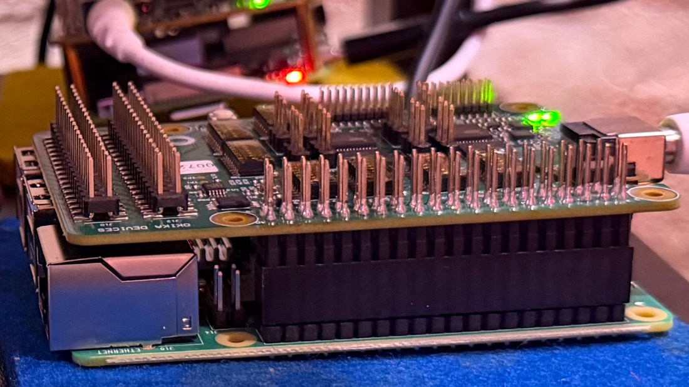
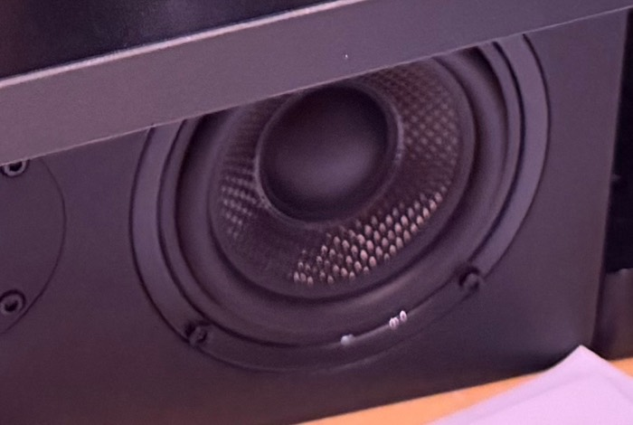
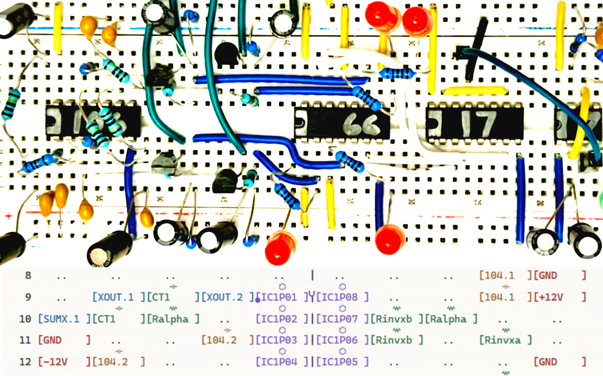
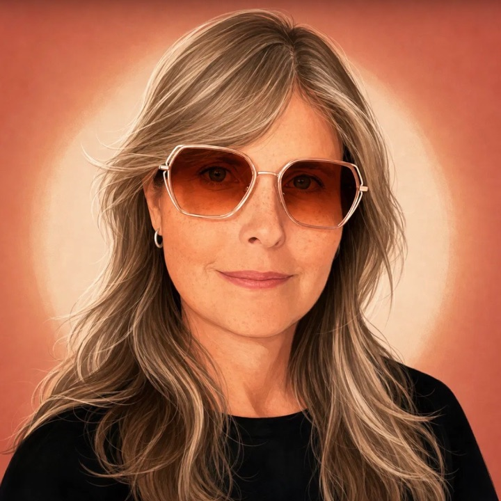

Winnerless competition describes electronic systems in which no state remains stable. Metastable Analog Synthesis builds that behavior in analog hardware and uses it to produce generative music.
What this project changes and why: Sustained metastable cycling has not been reported in hardware as a sound source, and no measurement protocol exists for a circuit that is meant never to settle. This project builds both, generative music via a cycling, artificial-life algorithm.

Pixie Ring Lists are a way of documenting breadboard electronics that helps you collaborate with AI.
Each circuit becomes a versioned sketchbook that keeps your wiring and the reasoning behind it. This project includes the development of careful, electronics-focused versions of Claude Code and Codex.
Coherence is a personalized, AI-native notebook. AI collaborators turn notes into meetings, tasks, circuit diagrams, and calendars, and the person stays in charge of the pace.
Designed with particular attention to neurodivergent people, people with brain injury, and people experiencing age-related cognitive change.

Tenured Associate Professor, School of Design, DePaul University
My emerging technology practice is focused on generative music on cutting-edge analog electronic substrates and design language specifications for collaborative AI.
Yes, my middle name really is Yes. I was born in California. I grew up in the entertainment nexus of Orlando, Florida, where I learned the value of constructed experiences. I live in Chicago and I'm the proud mom of a theater director/social work grad student.